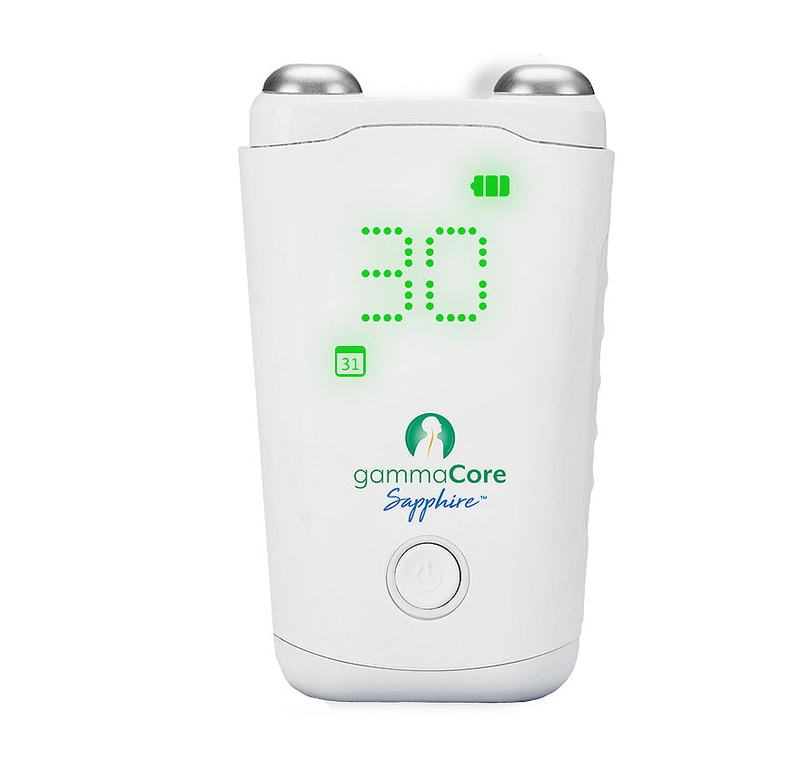

The Churchill Center
The Drug-Free Solution for Migraine and Cluster Headache
Treats and prevents migraine and cluster headache without pills, injections or drug like side effects. Take back control of your migraines.

gammaCore SapphireTM is the first and only FDA-cleared non-invasive device to treat and prevent multiple types of headache pain via the vagus nerve. It’s small, handheld, and portable for quick and easy treatments wherever and whenever needed.
Read moreShow less
For acute use: Treat right away and with a few 2-minute treatments, you can see fast-acting, long-lasting pain relief.
To prevent future headache pain: Simply treat 2 times a day (morning and night) for more headache-free days, so you can live life with less disruption.
One Device
Safe, Effective and Easy to Use Treatment for:
Migraine
Clinically proven to treat and prevent migraines in users ages 12 and up. Help reduce migraines days without additional drugs.
Hemicrania Continua (HC) & Paroxysmal Hemicrania (PH)
1st and ONLY device for HC and PH treatment, proven to reduce pain severity or headache frequency.
Cluster Headache
The only clinically proven device to treat and prevent cluster headache attacks, while providing fast, reliable relief for those suffering with cluster headache.
How It Works?
Unlike traditional vagus nerve stimulation, gammaCore non-invasive vagus nerve stimulator (nVNS) activates the vagus nerve with gentle electrical stimulation through the skin to prevent and relieve headache pain, without the need for surgery.
Read moreShow less
Why stimulate the vagus nerve? Think of the vagus nerve as the “superhighway” of the nervous system. This important highway sends communications between your brain and many parts of the body.
Stimulating the vagus nerve blocks the pain signals causing the attacks, to help provide fast relief and prevent future attacks.
Some benefits that patients have experienced and told us about, that are not listed research benefits, are that the Gammacore can be an immense help with insomnia, gut health and anxiety.
Featured In
A “Digital Health’s Big Secret”
“GammaCore can be used as often as you need, isn’t invasive, and doesn’t come with the side effects of other treatments”
“Cutting-Edge Treatments for Migraines”
“The Best Advances to Stop Chronic Headaches”
Call Dr. Churchill today for a 15 minute consultation to go over your specific symptoms and to see how gammaCore can change your life!